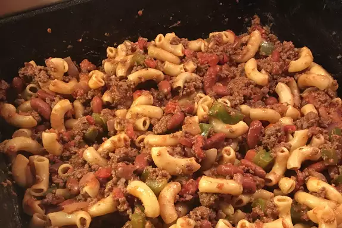

Chili Mac

This is an old family recipe that my mom has cooked for 50 years. It's a
wonderful, 'stick-to-the-ribs' meal that goes wonderful with warm
cornbread or rolls. I find that kids love this when they don't like
regular 'spicy' chili. Enjoy!
Ingredients
- 1 cup elbow macaroni
- 1 pound ground beef
- 1 small onion, chopped
- 1 cup chopped celery
- ½ large green bell pepper, chopped
- 1 (15 ounce) can kidney beans, drained
- 2 (10.75 ounce) cans condensed tomato soup
- 2 (14.5 ounce) cans diced tomatoes
- ⅛ cup brown sugar
- salt and pepper to taste
Steps
-
Bring a pot of lightly salted water to a boil. Add pasta and cook for 8
to 10 minutes or until al dente; drain.
-
In a small saucepan, simmer celery and green pepper with water to cover
until tender; Drain.
-
Place ground beef in a large heavy skillet over medium heat. Cook until
evenly brown. Add onion, and cook until tender and translucent. Drain
excess fat. Add celery and green pepper. Stir in kidney beans, condensed
tomato soup, diced tomatoes and brown sugar. Season with salt and
pepper, and stir in macaroni.